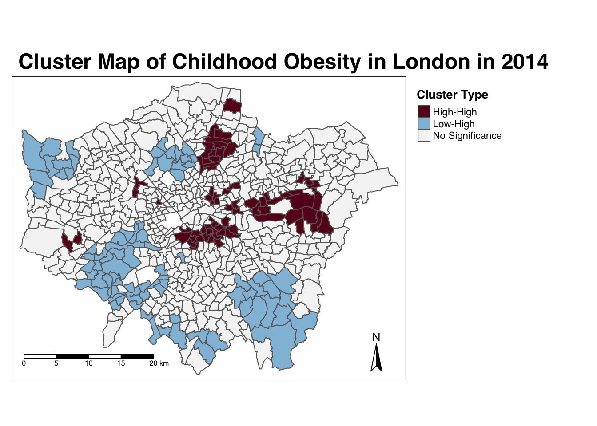

creates a local moran output
local <- localmoran(x = OA.Census$Qualification, listw = nb2listw(neighbours2, style = “W”)) By considering the help page for the localmoran function (run ?localmoran in R) we can observe the arguments and outputs. We get a number of useful statistics from the model which are as defined:
Name Description Ii local moran statistic E.Ii expectation of local moran statistic Var.Ii variance of local moran statistic Z.Ii standard deviate of local moran statistic Pr() p-value of local moran statistic
Run Local Moran’s I and produce LISA maps
obesity_LMI <- obesity_ward_sdf %>% pull(y6_obesity_2014) %>% as.vector() %>% localmoran(., ward_spatial_weights) %>% as_tibble()
#what does the output (the localMoran object) look like?
slice_head(obesity_LMI, n=5)## # A tibble: 5 x 5
## Ii E.Ii Var.Ii Z.Ii `Pr(z > 0)`
## <localmrn> <localmrn> <localmrn> <localmrn> <localmrn>
## 1 0.03833697 -0.0002813579 0.02955797 0.2246240 4.111359e-01
## 2 0.47282190 -0.0008440736 0.08838455 1.5932503 5.555202e-02
## 3 3.82565784 -0.0016881472 0.17590102 9.1256444 3.565538e-20
## 4 0.40863261 -0.0016881472 0.17590102 0.9783389 1.639534e-01
## 5 2.79741620 -0.0025322208 0.26254943 5.4644253 2.322044e-08Run Local Moran’s I and produce LISA maps
No we can plot a map of the local Moran’s I outputs…
We’ll set the breaks manually based on the rule that data points >2.58 or <-2.58 standard deviations away from the mean are significant at the 99% level (<1% chance that autocorrelation not present); >1.96 - <2.58 or <-1.96 to >-2.58 standard deviations are significant at the 95% level (<5% change that autocorrelation not present). >1.65 = 90% etc.
First, we will map the local moran statistic (Ii). A positive value for Ii indicates that the unit is surrounded by units with similar values.
tm_shape(obesity_ward_sdf) +
tm_polygons("obesity_LMI_Ii",
style="fixed",
breaks=LMI_breaks,
palette=MoranColours,
midpoint=NA,
title="Local Moran's I, Yr 6 Obesity in London in 2014")This map shows some areas in the centre of London that have relatively high scores, indicating areas with lots of blue plaques neighbouring other areas with lots of blue plaques.
From the map, it is possible to observe the variations in autocorrelation across space. We can interpret that there seems to be a geographic pattern to the autocorrelation. However, it is not possible to understand if these are clusters of high or low values.
Why not try to make a map of the P-value to observe variances in significance across Camden? Use names(moran.map@data) to find the column headers.
One thing we could try to do is to create a map which labels the features based on the types of relationships they share with their neighbours (i.e. high and high, low and low, insignificant, etc…). The following code will run this for you. Source: Brunsdon and Comber (2015).
### to create LISA cluster map ###
quadrant <- vector(mode="numeric",length=nrow(obesity_LMI))
# centers the variable of interest around its mean
mean_obesity <- obesity_ward_sdf$y6_obesity_2014 - mean(obesity_ward_sdf$y6_obesity_2014)
# centers the local Moran's around the mean
mean_obesity_LMI <- obesity_LMI$Ii - mean(obesity_LMI$Ii)
# significance threshold
signif <- 0.1
# builds a data quadrant
quadrant[mean_obesity >0 & mean_obesity_LMI>0] <- 4
quadrant[mean_obesity <0 & mean_obesity_LMI<0] <- 1
quadrant[mean_obesity <0 & mean_obesity_LMI>0] <- 2
quadrant[mean_obesity >0 & mean_obesity_LMI<0] <- 3
quadrant[obesity_LMI[,5]>signif] <- 0
# plot in r
brks <- c(0,1,2,3,4)
colors <- c("white","blue",rgb(0,0,1,alpha=0.4),rgb(1,0,0,alpha=0.4),"red")
plot(obesity_ward_sdf$geometry,border="lightgray",col=colors[findInterval(quadrant,brks,all.inside=FALSE)])
box()
legend("bottomleft",legend=c("insignificant","low-low","low-high","high-low","high-high"),
fill=colors,bty="n")
As similar effect can be achieved What about the Getis OrdG∗i statisic for hot and cold spots?
Another approach we can take is hot-spot analysis. The Getis-Ord Gi Statistic looks at neighbours within a defined proximity to identify where either high or low values cluster spatially. Here statistically significant hot-spots are recognised as areas of high values where other areas within a neighbourhood range also share high values too.
From our analysis
Check the help file (?localG) to see what a localG object looks like - it is a bit different from a localMoran object as it only contains just a single value - the z-score (standardised value relating to whether high values or low values are clustering together) And map the outputs…
The Gi Statistic is represented as a Z-score. Greater values represent a greater intensity of clustering and the direction (positive or negative) indicates high or low clusters. The final map should indicate the location of hot-spots a
We can also visually confirm
Assignment 2: Spatial autocorrelation of the IDACI variable
You may conduct additional tests on our remaining variables if you wish.
Analysing Relationships
Once you have mapped distributions
simple scatter plot
The linearity assumption can best be tested using a scatter plot
plot(x,y)
plot(x, y, xlab="“, ylab=”", pch =16)
smybols(x,y, circles=obesity)
Using Linear Regression to test relationships between variables
6.0.1
Linear regression is an analysis that assesses whether one or more predictor variables explain the dependent (criterion) variable. The regression has five key assumptions: Linear relationship - scatter plot Multivariate normality - When the data is not normally distributed a non-linear transformation (e.g., log-transformation) might fix this issue. No or little multicollinearity - assumes that there is little or no multicollinearity in the data. Multicollinearity occurs when the independent variables are too highly correlated with each other.Multicollinearity may be tested with three central criteria: 1) Correlation matrix – when computing the matrix of Pearson’s Bivariate Correlation among all independent variables the correlation coefficients need to be smaller than 1. 2) Tolerance – the tolerance measures the influence of one independent variable on all other independent variables; the tolerance is calculated with an initial linear regression analysis. Tolerance is defined as T = 1 – R² for these first step regression analysis. With T < 0.1 there might be multicollinearity in the data and with T < 0.01 there certainly is. 3) Variance Inflation Factor (VIF) – the variance inflation factor of the linear regression is defined as VIF = 1/T. With VIF > 5 there is an indication that multicollinearity may be present; with VIF > 10 there is certainly multicollinearity among the variables. If multicollinearity is found in the data, centering the data (that is deducting the mean of the variable from each score) might help to solve the problem. However, the simplest way to address the problem is to remove independent variables with high VIF values. No auto-correlation - requires that there is little or no autocorrelation in the data. Autocorrelation occurs when the residuals are not independent from each other. In other words when the value of y(x+1) is not independent from the value of y(x). Homoscedasticity - The last assumption of the linear regression analysis is homoscedasticity. The scatter plot is good way to check whether the data are homoscedastic (meaning the residuals are equal across the regression line). The following scatter plots show examples of data that are not homoscedastic (i.e., heteroscedastic):
A note about sample size. In Linear regression the sample size rule of thumb is that the regression analysis requires at least 20 cases per independent variable in the analysis.
Normally, you would also check the underlying assumptions of the linear model (linearity, homoscedasticity, independence, and normality)
So if we want to develop a regression model for bike theft in London we may have to recognise this spatial component.
The second of two key properties of spatial data: spatial heterogeneity. With the underlying process (or processes) that govern a spatial variable likely to vary across space, a single global relationship for an entire region of study may not adequately model the process that governs outcomes in any given location of the study region.
As a result, multiple methods have been developed to incorporate ‘space’ into traditional regression models, including spatial lag models, spatial error models, and Geographical Weighted Regression.
Assumption 2 - The residuals in your model should be normally distributed
This assumption is easy to check. When we ran our Model1 earlier, one of the outputs stored in our Model 1 object is the residual value for each case (Ward) in your dataset. We can access these values using augment() from broom which will add model output to the original GCSE data…
We can plot these as a histogram and see if there is a normal distribution:
Assumption 3 - No Multicolinearity in the independent variables
Now, the regression model we have be experimenting with so far is a simple bivariate (two variable) model. One of the nice things about regression modelling is while we can only easily visualise linear relationships in a two (or maximum 3) dimension scatter plot, mathematically, we can have as many dimensions / variables as we like.
However, our data are very spatial and we did not incorporate this spatial distribution into our model. So if we want to develop a regression model for bike theft in London we may have to recognise this spatial component. On top of this, a regression model assumes independence of observations: what happens in LSOA001 is not related to what happens in LSOA002 or any other LSOA. However, we know from last weeks content that this is not always the case because of spatial autocorrelation.
Integrating spatial variation into regression models
We - well believe it or not there is a whole area of research into how we can imcoporate spat
The most simplest (and I say “simplest”) is the use of a Spatial Error or Spatial Lag model
The extension for this week More advanced approach is known as Geographically Weighted Regression - an excellent tutorial on this within a recently published online book. part of week 10 which will primarily be guided by your own interests.
Learning Objectives
You should now hopefully be able to:
- Understand how to analyse distributions of (areal) spatial data through visual and statistical analysis
- Explain the different approaches to defining neighbours within spatial autocorrelation
- Run different types of spatial autocorrelation techniques and understand their differences
- Understand the basics of incorporating the issue of spatial autocorrelation into regression
Acknowledgements
Part of this page is adapted from GEOG0114: Principles of Spatial Analysis by Dr Joanna Wilkin (this Workbook’s author), Dr Justin Van Dijk and Alfie Long at UCL, Spatial Autocorrelation by Dr Manuel Gimond at Colby College (thank you for the images!) and CASA005: GWR and Spatially Lagged Regression by Dr Andrew MacLachlan at CASA, UCL.
The datasets used in this workshop (and resulting maps):
- Contains National Statistics data © Crown copyright and database right [2015] (Open Government Licence)
- Contains Ordnance Survey data © Crown copyright and database right [2015]
- Public Health England © Crown copyright 2021